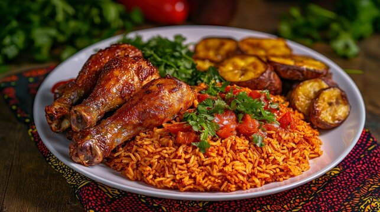
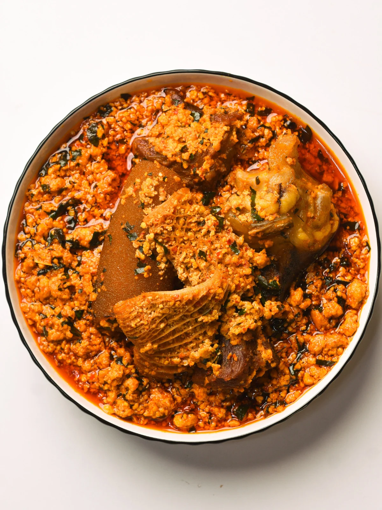

Ghanaian Jollof Rice
A flavorful rice dish cooked in a tomato-based sauce with spices.
Country: Ghana
Cooking Time: 60 minutes
Difficulty: Medium
View RecipesWelcome to African Recipe Studio, a place where you can explore delicious meals from different African countries. Learn about the dishes, their ingredients, and how to prepare them at home.
Explore RecipesAfrican food is known for its variety of flavors, spices, and cooking traditions. From Ghanaian Jollof Rice to Nigerian Egusi Soup, there are many interesting dishes to discover.
This website brings together a small collection of recipes from different parts of Africa. Each recipe includes ingredients and simple cooking instructions.
Here are some popular African dishes you can try preparing at home.

A flavorful rice dish cooked in a tomato-based sauce with spices.
Country: Ghana
Cooking Time: 60 minutes
Difficulty: Medium
View Recipes
A traditional Ghanaian dish made with rice and beans.
Country: Ghana
Cooking Time: 90 minutes
Difficulty: Medium
View Recipes
A Nigerian soup made with ground melon seeds, vegetables, and spices.
Country: Nigeria
Cooking Time: 55 minutes
Difficulty: Medium
View RecipesDiscover popular rice meals such as Jollof Rice and Waakye.
Explore African soups and stews made with different ingredients.
Learn about traditional breads and side dishes from Africa.